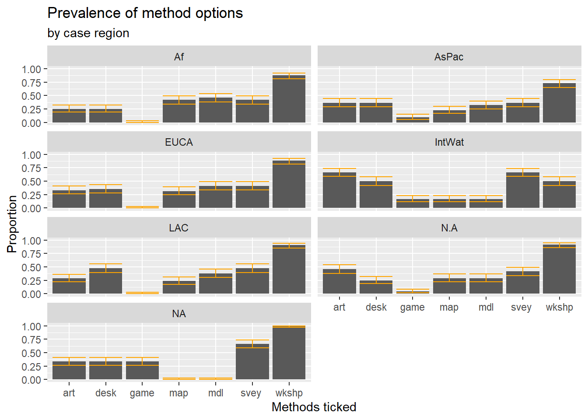
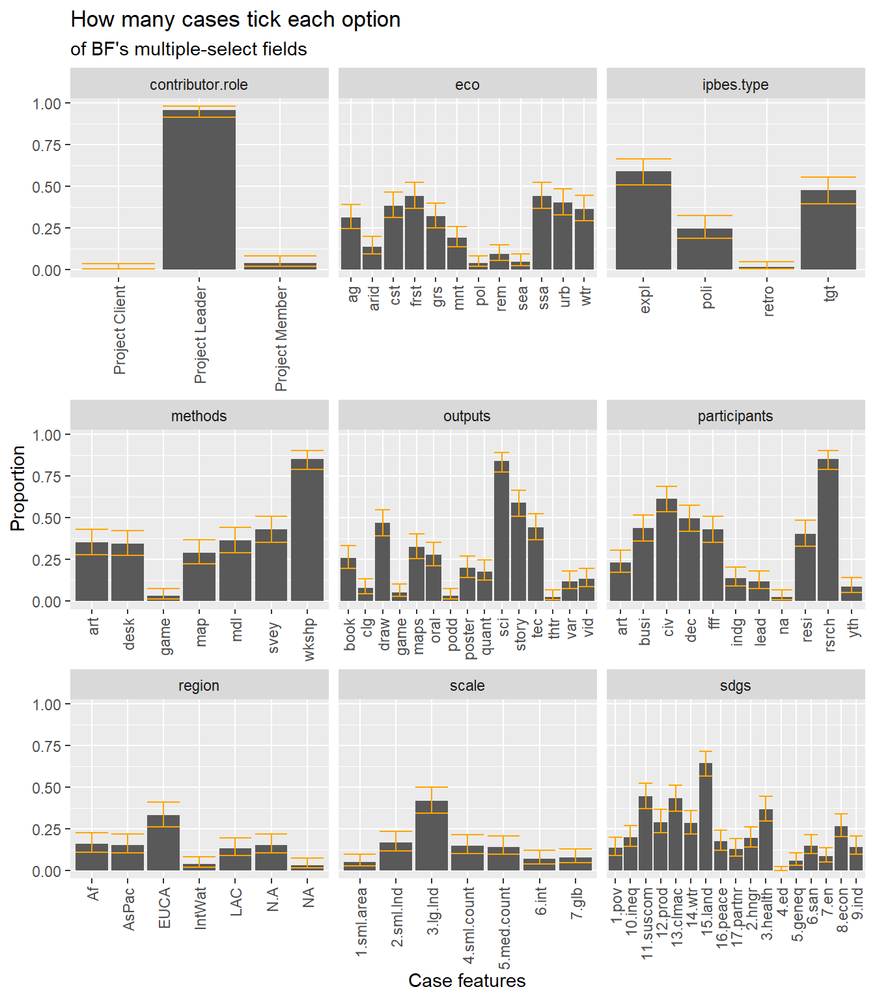

Warning: package 'tidyverse' was built under R version 4.6.1
── Attaching core tidyverse packages ──────────────────────── tidyverse 2.0.0 ──
✔ dplyr 1.2.1 ✔ readr 2.2.0
✔ forcats 1.0.1 ✔ stringr 1.6.0
✔ ggplot2 4.0.3 ✔ tibble 3.3.1
✔ lubridate 1.9.5 ✔ tidyr 1.3.2
✔ purrr 1.2.2
── Conflicts ────────────────────────────────────────── tidyverse_conflicts() ──
✖ dplyr::filter() masks stats::filter()
✖ dplyr::lag() masks stats::lag()
ℹ Use the conflicted package (<http://conflicted.r-lib.org/>) to force all conflicts to become errors
library(socviz)
Warning: package 'socviz' was built under R version 4.6.1
library(DT)
Warning: package 'DT' was built under R version 4.6.1
Bringing in data exported from the BiosphereFutures database. I name my export files by date (in YYMMDD format); here, export-date determines which file we want to read from.
It’s nice to change the column names to be shorter and more manageable. In doing so, it’s necessary to consider that the export file’s column names might be in an unexpected order. match and gsub help us handle that possibility.
colnames.og <-c("ID", "Thematic page(s)", "Title", "Permalink", "Date Contributed", "Region", "Country", "Subnational Region", "Latitude", "Longitude", "Case Contributor", "Contributor Role", "Project Website", "Intro", "Description", "Impact", "Project Year", "Time Horizon", "Sustainable Development Goals (SDGs)", "Ecosystem(s)", "Scale", "Method(s)", "Output(s)", "Participants included", "Theme(s)", "IPBES Scenario Type(s)", "Resource 1 (Reference)", "Resource 1 (Link)", "Resource 2 (Reference)", "Resource 2 (Link)", "Resource 3 (Reference)", "Resource 3 (Link)")# The import process converts the parentheses in the column names to periods. So I'll repeat that conversion for my column name vectorcolnames.og <-gsub("[\\(\\) ]", ".", colnames.og) # We'll reorder the column names in case the file has a different order. # I find the column order in a roundabout way to guard against the case where the file does not contain all of the columns listed above# Actually it doesn't seem necessary to invert the order. I've commented out that partcolnames.order <-match(names(bf), colnames.og)#colnames.order <- match( C(1:length(colnames.order.inv)), colnames.order.inv)colnames.short <-c("id", "thm.pg", "title", "link", "date", "region", "country", "subnat", "lat", "lon", "case.contributor", "contributor.role", "website", "intro", "desc", "impact", "year", "horizon", "sdgs", "eco", "scale", "methods", "outputs", "participants", "themes", "ipbes.type", "ref1", "ref1.link", "ref2", "ref2.link", "ref3", "ref3.link")names(bf) <- colnames.short[colnames.order]
Topic 1: First steps
My goal for this topic is to import the BF data, wrangle it into a tidy format (meaning a format legible to R’s visualization processes), and plot the proportion of cases that tick the various options of our categorical variables.
A note on terminology:
Case: The BF database consists of 150+ “cases,” each of which corresponds to a scenario planning study.
Field: I use the term “field” to refer to the different variables tracked in the database. Title, year, date contributed, scale(s), and region are fields. I may use this term interchangeably with “variable.”
Option: By definition, our categorical fields consist of various options that might apply to a given case. The SDG field has 17 options (for the 17 SDGs), our Region field has 7 options (including non-selection), etc. I refer to a case as “ticking” the options that apply to it. I may use this term interchangeably with “value.”
Multiple-select vs single-choice: I refer to fields in which multiple options can be ticked as “multiple-select” fields. Variables for which only one option can be chosen are “single-choice” fields.
What I did
Setting up the data
The multiple-select fields are:
Sustainable Development Goal(s)
Ecosystem(s)
Scale(s)
Method(s)
Output(s)
Participants included
IPBES Scenario Type(s)
(Note: Theme(s) and Thematic page(s) might also be in this category, but I’m excluding them for now because they’re optional)
The single-choice variables are Region and Contributor Role
(Note: Although “Country” and “Project year” could also hypothetically be represented as single-choice variables, the possible options are not (usefully) bounded)
To find the proportion of cases that tick each variable option, I applied different procedures for the multiple-select and single-choice fields. For the multiple-select variables, the proportions can be found using mean, since they are represented by 0s and 1s. For the single-choice variables, we can use count() and divide by the total number of cases.
When finding the proportions for each field, I had to decide whether to include cases missing data for that field (or NA values) in the total count. I decided not to include NAs for the multiple-select fields, because missing data usually means that the field wasn’t available on the contribution form for that case. True non-selection is represented by 0 instead. For the single-choice fields (specifically region, here, as there are no NAs for contributor role), NA refers to purposeful non-selection, so I decided to include them in the count.
We set our threshold for notable rarity at 5%
For the error bars, I found confidence intervals using the Wilson Score Interval, as implemented in the npsm::wilson.ci() method. Among confidence interval methods that presuppose the binomial distribution1, score interval approaches are best for small datasets. They find the interval by calculating the range of null hypotheses (assumed population proportions) for which the sample proportion would be reasonably likely (i.e. within a determined confidence level). I use the Wilson test specifically because it was suggested in Agresti 2018.
1 the equivalent of the normal distribution for binary data in which individual observations can be assumed to be independent of each other. “Observations,” here, means ticks for a given option between cases. More on this in the Questions section.
We set our confidence level at 95%.
lowprop <-0.05# The threshold for which proportions we consider "low"conf <- .95# Desired confidence level for confidence interval (1 - alpha)source("1_plot_proportions.R")
Warning: package 'npsm' was built under R version 4.6.1
Loading required package: Rfit
Warning: package 'Rfit' was built under R version 4.6.1
Warning: Use of .data in tidyselect expressions was deprecated in tidyselect 1.2.0.
ℹ Please use `all_of(var)` (or `any_of(var)`) instead of `.data[[var]]`
p <- bf.reg.prop |>ggplot(mapping =aes(x = option, y = prop))p +geom_col() +facet_wrap(~ region, ncol =2) +labs(x ="Methods ticked", y ="Proportion", title ="Prevalence of method options",subtitle ="by case region") +geom_errorbar(aes(ymin = ci.low, ymax = ci.hi), color ="orange")

And here’s the proportions for all of our categorical variables, across all cases in the database.
p <- bf.prop |>ggplot(mapping =aes(x = option, y = prop))p +geom_col() +facet_wrap(~ field, ncol =3, scales ="free_x") +labs(x ="Case features", y ="Proportion", title ="How many cases tick each option", subtitle ="of BF's multiple-select fields") +theme(axis.text.x =element_text(angle =90, hjust =1, vjust = .5)) +geom_errorbar(aes(ymin = ci.low, ymax = ci.hi), color ="orange")

Discussion
There are no real surprises on the low-proportion options. It’s perhaps interesting that the “Open waters” ecosystem (sea) is so much rarer than “Coastal and marine areas” (cst), but it makes sense that scenario planning efforts would focus more on areas that have more human presence (even though human activity certainly has material impacts on remote areas as well).
I was surprised at the very different distribution of methods among cases set in International Waters (or that didn’t choose a region) - until I remembered that those regions are low-proportion. It’s probably best to understand that particular variance as noise, stemming from the fact that those regions are dominated by, like, 3 studies each. This dynamic also holds for outputs and participants. There’s a lot more variation between regions for ecosystems and scales. For SDGs, there was obvious variation for the Europe and Central Asia region: the proportions of SDG 11 and 13 in this region even sit outside the error bars for the other regions.
I’ll note that confidence intervals on contributor role don’t mean anything, right? Among the broader population of scenario planning case studies (not yet submitted to the BF database), the “contributor role” variable has no value, because there is not yet a contributor. In other words, this variable only applies to cases that have already been sampled - there is no “population” proportion.
Questions and next Steps
To get the options displayed in the right order, I’d need to recode the data as factors. I don’t know what impact that will have on all the code I’ve written.
I’m concerned about how long it takes for R to process my code, especially since I’m not doing anything particularly complex. Is there anything obvious I can do to make my code less expensive?
Is it alright to use the binomial distribution (for my CI calculation)? The binomial distribution requires the “observations” (the cases, here) be independent of each other. It is clear that independence does not hold between options: we have seen correlations both within (e.g. between the “mapping” and “modelling” methods) and between (e.g. the “mapping” method and the “maps” output) fields. It might be possible that the cases have some dependence too - for example, one could argue that a high profile case being submitted to the database could encourage people doing similar work to submit their cases. Or, more straightforwardly, one could point to the influx of UREx, Radical Ocean Futures, or African Futures cases. However, I don’t know how to proceed with analysis without assuming independence anyway.
How does the non-randomness of our dataset affect my CI considerations?
Is there anything I need to worry about, regarding my decisions to ignore or not ignore NAs for the single-choice and multiple-select data, respectively?
Appendix
You can find my code on Github. The following scripts are relevant:
1_multiselect_to_binary.R contains all my wrangling of the multiple-select data (into columns for each option, in which “ticks” are represented by 1s (and non-ticks are 0s).
```{r}# highlight# field: a string which must be one of the column names defined above# missing: binary, determines whether function will add a column of 0s for missing values# shorten: binary, determines whether value names will be shortened in output df# returns a data frame containing binary-presence data for each # value of field per recordocc <-function(bfdat, field, missing =FALSE, shorten =TRUE){ bf_f <- bfdat |>select(id, matches(field))names(bf_f)[2] <-"f" bf_f <- bf_f |>mutate(field_split =strsplit(f, split ="|", fixed =TRUE)) |>#mutate adds another column with the split valuesmutate(f =NULL) |>unnest(field_split, keep_empty =TRUE) |># unnest creates a new row for # each value in the field listmutate(value =1) # this is preparation for the pivot - because I'm looking for # simple binary-presence data, there's no "value" to feed into pivot_wider. # I've appended a column of 1s so that it has at least that na.ids <-filter(bf_f, is.na(field_split))[["id"]] # Record NA rows for later bf_f <- bf_f |>filter_out(is.na(field_split)) |>pivot_wider(names_from = field_split, values_fill =0)# Now we'll bring in the value names valnm <-import_value_names(field, fields.filenames) valnm.og <- valnm[["orig"]] valnm.sht <- valnm[["short"]] bf_fnoid <- bf_f |>mutate(id =NULL) valnm.order <-match(valnm.og, names(bf_fnoid))# Check if there are any possible values not present in the dataif(NA%in% valnm.order){ missind <-which(valnm.order %in%NA) # indices of missing values missvals <- valnm.og[missind]if(missing){# add column of 0sfor(val in missvals){ bf_fnoid <- bf_fnoid |>mutate("{val}":=0) } }else{# remove missing value from valnm valnm.og <- valnm.og[! missind] valnm.sht <- valnm.sht[! missind] } } bf_fnoid <- bf_fnoid[valnm.og] # reorder columnsif(shorten){names(bf_fnoid) <-paste0(field, ".", valnm.sht) } bf_fnas <-occ_nas(na.ids, colnames(bf_fnoid)) bf_f <-cbind(bf_f["id"], bf_fnoid) bf_f <-rbind(bf_f, bf_fnas) |>arrange(id)return(bf_f)}```
1_tidy_singlechoice.R contains my wrangling for the single-choice data. This entirely means shortening the names for the region options.